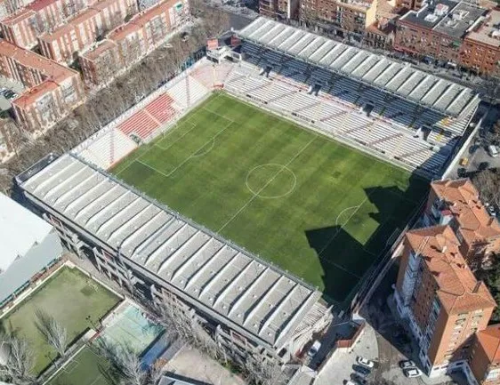

Treinador: Iñigo Pérez
Íñigo Pérez é um treinador espanhol nascido em Pamplona, reconhecido pela sua modernidade, proximidade e visão tática refinada. Destacou-se como o braço direito de Andoni Iraola antes de assumir o comando principal do Rayo Vallecano
Estádio: Vallecas
O Estádio de Vallecas é um recinto desportivo espanhol localizado em Madrid, conhecido pela sua atmosfera rebelde, castiça e apaixonante. Destacou-se pela sua arquitetura singular de apenas três bancadas e pela proximidade extrema dos adeptos ao relvado.

Estilo de Jogo:
No Rayo Vallecano, o treinador Íñigo Pérez utiliza um estilo de jogo que combina a herança de Andoni Iraola com uma maior ênfase no controlo e iniciativa.
"Valentía, Coragem y Nobleza!"